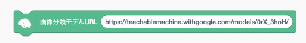
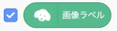
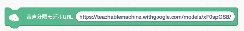
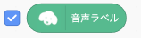

次はティーエムツー・スクラッチにカードの画像認識データを取りこみます
ティーエムツー・スクラッチを起動したら、まず「画像分離モデルURL」ブロックをスクリプトエリアに置いてください。
ブロックの中のアドレスを先程アップロードしたアドレスに置き換えたらブロックをクリックしてしばらく待ちます。
学習データの取りこみが終わったら「画像ラベル」変数ブロックの左側のチェックボックスにチェックを入れてカードが正しく認識されるか確認して下さい。
次はティーエムツー・スクラッチに声の音声認識データを取りこみます 「音声分離モデルURL」ブロックをスクリプトエリアに置いてください。
ブロックの中のアドレスを先程アップロードしたアドレスに置き換えたらブロックをクリックしてしばらく待ちます。
学習データの取りこみが終わったら「音声ラベル」変数ブロックの左側のチェックボックスにチェックを入れてカードが正しく認識されるか確認して下さい。
